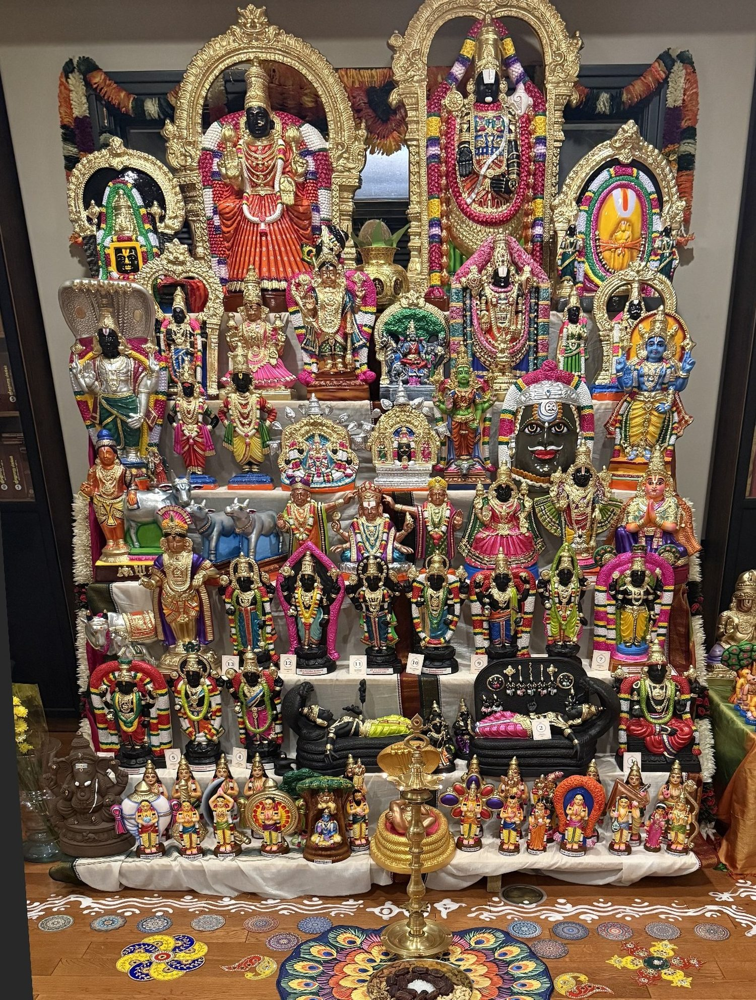

Navaratri Golu 2026 · Journey Home
The soul’s journey to the lotus feet of Sriman Narayana
Meet the Perumāls of Our Golu
The Perumāls, Thāyārs, Ālwārs and Āchāryas on our Golu steps, in order from the top left of the stage. Tap a number to jump to one.
எங்கள் கொலுப் படிகளில் உள்ள பெருமாள், தாயார், ஆழ்வார்கள், ஆசார்யர்கள் – மேல் இடப்புறத்திலிருந்து வரிசையாக. ஒரு எண்ணைத் தொட்டால் அதற்குச் செல்லலாம்.

Tap the photo to enlarge.படத்தைப் பெரிதாகக் காணத் தொடவும்.
1
Sri Ranganathar of Karamadai, about 23 kilometres from Coimbatore in Tamil Nadu. What is special is that only His divine face is seen, not a reclining, sitting or standing form. The story is that a herdsman's cow stopped giving milk, and when he dug into an anthill, the Lord's face was found; a temple was built around it. There is a seven-tiered gopuram and a fifteen-day Brahmotsavam in Maasi. It is an Abhimana Kshetram, not one of the 108 Divya Desams. His consort is Sri Ranganayaki.
கோயம்புத்தூரிலிருந்து சுமார் 23 கி.மீ. தொலைவில் உள்ள கரமடை ஸ்ரீ ரங்கநாதர். இங்கு பெருமாளின் திருமுகம் மட்டுமே தரிசனம்; படுத்த, அமர்ந்த, நின்ற கோலம் அல்ல. ஒரு இடையனின் பசு பால் சுரக்காமல் போக, அவன் புற்றைத் தோண்டியபோது பெருமாளின் திருமுகம் கிடைத்தது; அதைச் சுற்றியே கோயில் எழுந்தது. ஏழு நிலை ராஜகோபுரமும், மாசியில் பதினைந்து நாள் பிரம்மோற்சவமும் உண்டு. இது அபிமான க்ஷேத்திரம்; 108 திவ்ய தேசங்களில் ஒன்றல்ல. தாயார் ஸ்ரீ ரங்கநாயகி.
2
Sri Srinivasa Perumal of Tirumala, Tirupati, with Alamelu Manga Thayar, who is Padmavati, whose own temple is at Tiruchanur at the foot of the hill. Tirumala is a Divya Desam, Thiruvenkatam, sung by the Alwars. Tradition says to visit Thayar first at Tiruchanur, then go up to Srinivasa. The story is that Thayar was born from a golden lotus, and Srinivasa married her at Narayanavanam; devotees say He borrowed from Kubera for the wedding, and offerings at Tirumala help repay it.
திருமலை திருப்பதி ஸ்ரீ ஸ்ரீநிவாசப் பெருமாள்; அவருடன் அலமேலு மங்கா தாயார் – பத்மாவதி. அவருக்கு மலையடிவாரத்தில் திருச்சானூரில் தனிக் கோயில். திருமலை ஒரு திவ்ய தேசம் – திருவேங்கடம்; ஆழ்வார்கள் மங்களாசாசனம் செய்தவர். முதலில் திருச்சானூரில் தாயாரைத் தரிசித்துப் பின் மலையேறிப் பெருமாளைத் தரிசிப்பது மரபு. தாயார் தங்கத் தாமரையில் அவதரித்தவள்; நாராயணவனத்தில் திருமணம். அதற்காகக் குபேரனிடம் கடன் வாங்கினார் என்றும், திருமலைக் காணிக்கை அதைத் திருப்ப உதவுகிறது என்றும் பக்தர்கள் நம்புகின்றனர்.
3
Sri Varaha Lakshmi Narasimhar of Simhachalam, a hill near Visakhapatnam in Andhra Pradesh. His form is special: Varaha, the boar, and Narasimha, the man-lion, in one image. He saved Prahlada and, at Prahlada's request, took this joined form; Prahlada is said to have built the first temple. Most of the year He is covered with sandalwood paste; only on Akshaya Tritiya, at Chandanotsavam, is it removed so devotees can see His original form for about twelve hours.
ஆந்திரா, விசாகப்பட்டினம் அருகே சிம்மாசல மலையில் எழுந்தருளிய ஸ்ரீ வராஹ லக்ஷ்மி நரசிம்மர். வராஹமும் நரசிம்மமும் ஒரே திருமேனியில் இருப்பது இவரது சிறப்பு. பிரகலாதனைக் காத்து, அவன் வேண்டுதலின்படி இந்த இணைந்த கோலத்தை ஏற்றார்; முதல் கோயிலைப் பிரகலாதனே கட்டினான் என்பர். ஆண்டின் பெரும்பகுதி சந்தனக் காப்பில் இருப்பார்; அட்சய திருதியை சந்தனோற்சவத்தன்று மட்டுமே காப்பு நீக்கி, சுமார் பன்னிரண்டு மணி நேரம் அசல் திருமேனி தரிசனம்.
4
Neervanna Perumal of Thiruneermalai, near Tambaram, Chennai, a Divya Desam. The special thing is that the Lord is seen here in all four postures: standing as Neervanna Perumal at the foot of the hill, and on the hilltop reclining as Ranganatha, sitting as Narasimha, and walking as Trivikrama. Thayar at the foot is Animamalarmangai, and on the hill Ranganayaki. The place is called Toyadri, the hill surrounded by water. Thirumangai Alwar and Bhoothathalwar sang here. Valmiki, after the Ramayana, is said to have worshipped Ranganatha on this hill.
சென்னை தாம்பரம் அருகே திருநீர்மலை நீர்வண்ணப் பெருமாள் – திவ்ய தேசம். இங்கு பெருமாளை நான்கு கோலங்களிலும் தரிசிக்கலாம் என்பது சிறப்பு: மலையடிவாரத்தில் நின்ற கோலத்தில் நீர்வண்ணன்; மலைமேல் கிடந்த கோலத்தில் ரங்கநாதர், அமர்ந்த கோலத்தில் நரசிம்மர், நடந்த கோலத்தில் திரிவிக்கிரமர். அடிவாரத்தில் தாயார் அணிமாமலர் மங்கை; மலைமேல் ரங்கநாயகி. சுற்றிலும் நீர் சூழ்ந்த மலை என்பதால் தோயாத்ரி, திருநீர்மலை. திருமங்கையாழ்வாரும் பூதத்தாழ்வாரும் பாடினர். வால்மீகி ராமாயணம் இயற்றியபின் இம்மலையில் ரங்கநாதரை வழிபட்டார் என்பர்.
5
Sri Amaruviappan of Therazhundur, about 10 kilometres from Mayiladuthurai, a Divya Desam sung by Thirumangai Alwar. Thayar is Sengamalavalli. The story is that when Brahma took away Krishna's cattle, Krishna created a new herd; Brahma apologised and asked Him to stay here, so He is called Amaruviappan, the Lord who stays with the cows. The sanctum is under a Garuda Vimanam, and has images of cattle and sages. It is also counted among the Pancha Krishnaranya Kshetrams.
மயிலாடுதுறை அருகே சுமார் 10 கி.மீ. தொலைவில் தேரழுந்தூர் ஆமருவியப்பன் – திவ்ய தேசம்; திருமங்கையாழ்வார் பாடியது. தாயார் செங்கமலவல்லி. பிரம்மா கண்ணனின் பசுக்கூட்டத்தை மறைத்தபோது, கண்ணன் புதிய கூட்டத்தைப் படைத்தார்; பிரம்மா மன்னிப்பு வேண்டி இங்கே எழுந்தருள வேண்டினார்; ஆகவே ஆ (பசு) மருவிய அப்பன். கருடாகிருதி விமானத்தின்கீழ் கருவறை; பசுக்களும் முனிவர்களும் அங்கு உள்ளனர். பஞ்ச கிருஷ்ணாரண்ய க்ஷேத்திரங்களில் ஒன்றும் ஆகும்.
6
This one doll shows the whole churning of the milk ocean, the Parkadal, between the devas and the asuras, with the Mandara mountain as the rod and Vasuki as the rope. Many things came out, and you can see them all here: Kamadhenu, the wish-giving cow; Kalpavriksha, the wish-giving tree; Uchchaishravas, the divine horse; Airavata, the white elephant; and Dhanvantari Perumal, who came carrying the pot of amrita. When the asuras seized the amrita, Perumal took the Mohini avatar and gave it to the devas. And Sri Mahalakshmi rose from the ocean on a lotus and chose Sriman Narayana.
இந்த ஒரே பொம்மை, தேவர்களும் அசுரர்களும் மந்தர மலையை மத்தாகவும் வாசுகியைக் கயிறாகவும் கொண்டு பாற்கடலைக் கடைந்த முழு நிகழ்ச்சியையும் காட்டுகிறது. எழுந்த பொருள்கள் எல்லாம் இங்கே உள்ளன: காமதேனு, கற்பகவிருட்சம், உச்சைஸ்ரவஸ் என்னும் தேவக் குதிரை, ஐராவதம் என்னும் வெள்ளை யானை, அமுதக்கலசத்துடன் தன்வந்திரி பெருமாள். அசுரர்கள் அமுதத்தைப் பறித்தபோது பெருமாள் மோகினி அவதாரம் எடுத்து அதைத் தேவர்களுக்குக் கொடுத்தார். மகாலக்ஷ்மி தாமரை மேல் எழுந்து ஸ்ரீமன் நாராயணனையே தேர்ந்தெடுத்தாள்.
7
Mangalasasanam means singing in praise and wishing every good for the Lord. The Alwars, overflowing with love, sang the Lord's well-being at 108 Divya Desams, and we remember them with this Perumal.
மங்களாசாசனம் என்பது பெருமாளுக்கே எல்லா நலன்களும் வேண்டிப் பாடுவது. அன்பு பெருகிய ஆழ்வார்கள் 108 திவ்ய தேசங்களில் பெருமாளை வாழ்த்திப் பாடினர்; அதை இந்தப் பெருமாளுடன் நினைவு கூர்கிறோம்.
8
Sri Parthasarathy of Triplicane, Thiruvallikeni, in Chennai, a Divya Desam sung by Thirumangai Alwar and Pey Alwar. Krishna stands as Arjuna's charioteer, and it is unusual that He has a moustache. The scar on His face is remembered as the mark of Bhishma's arrow, when Krishna fought no battle yet took the wounds. He holds a conch only. He stands with Rukmini, Balarama, Satyaki, Pradyumna and Aniruddha. Thayar is Vedavalli. The same temple has Narasimha, Rama, Ranganatha and Gajendra Varadaraja, five forms in all. Ramanuja's father is said to have prayed here for a son.
சென்னை திருவல்லிக்கேணி ஸ்ரீ பார்த்தசாரதிப் பெருமாள் – திவ்ய தேசம்; திருமங்கையாழ்வாரும் பேயாழ்வாரும் பாடியது. அர்ஜுனனின் தேர்ப்பாகனாக நிற்கும் கண்ணனுக்கு மீசை இருப்பது அபூர்வம். போரில் ஆயுதம் ஏந்தாத கண்ணன் பீஷ்மரின் அம்புக் காயம் தாங்கினார்; அந்தத் தழும்பே என்பர். கையில் சங்கு மட்டும். ருக்மிணி, பலராமர், சாத்யகி, பிரத்யும்னன், அநிருத்தன் உடன். தாயார் வேதவல்லி. இதே கோயிலில் யோக நரசிம்மர், ராமர், ரங்கநாதர், கஜேந்திர வரதர் என ஐந்து கோலங்கள். ராமானுஜரின் தந்தை இங்கே மகன் வேண்டிப் பிரார்த்தித்தார் என்பர்.
9
Nilathingal Thundam Perumal in Kanchipuram, a Divya Desam sung by Thirumangai Alwar. The special thing is that His shrine is inside the Ekambareswarar temple, a Shiva temple; it is one of three such Divya Desams. He faces west, while Ekambareswarar faces east. Thayar is Nilathingal Thunda Nayagi, also called Ver Oruvar Illa Valli, with no separate shrine. The story is that Parvati did penance under the mango tree, and Vishnu, her brother, took the crescent moon from Shiva's head and cooled her with its rays.
காஞ்சிபுரம் நிலாத்திங்கள் துண்டப் பெருமாள் – திவ்ய தேசம்; திருமங்கையாழ்வார் பாடியது. இவரது சன்னிதி ஏகாம்பரேஸ்வரர் என்ற சிவன் கோயிலுக்குள்ளேயே உள்ளது என்பது சிறப்பு; இது போல மூன்று திவ்ய தேசங்கள் உண்டு. ஏகாம்பரநாதர் கிழக்கு நோக்க, பெருமாள் மேற்கு நோக்கி எழுந்தருள்கிறார். தாயார் நிலாத்திங்கள் துண்டத் தாயார் – வேரொருவரில்லா வல்லி; தனிச் சன்னிதி இல்லை. மாமரத்தடியில் பார்வதி தவம் செய்தபோது, அவளது சகோதரனான விஷ்ணு சிவனின் தலையிலுள்ள பிறைச்சந்திரனை எடுத்து அதன் கதிர்களால் அவளைக் குளிர்வித்தார் என்பது வரலாறு.
10
Panduranga Vithoba with Rakhumai of Pandharpur in Maharashtra, on the banks of the Bhima river. Vithoba stands on a brick with hands on His hips. The story is that the devotee Pundalik, serving his parents, threw a brick for Krishna to stand on, and the Lord is still waiting there. Rakhumai is Rukmini, with her own shrine. Every year the Varkaris walk to Pandharpur for Ashadhi Ekadashi, singing abhangs. It is not one of the 108 Divya Desams.
மகாராஷ்டிரம் பண்டரிபுரத்தில் பீமா நதிக்கரையில் பாண்டுரங்க விட்டலன் – ரகுமாயியுடன். இடுப்பில் கை வைத்து, ஒரு செங்கல் மேல் நிற்கிறார். பெற்றோருக்குப் பணிவிடை செய்த பக்தர் புண்டலீகன் கண்ணனுக்கு நிற்க ஒரு செங்கல்லை எறிய, பகவான் இன்றும் அங்கேயே நிற்கிறார் என்பது வரலாறு. ரகுமாயி என்பது ருக்மிணி; தனிச் சன்னிதி உண்டு. ஆண்டுதோறும் ஆஷாடி ஏகாதசிக்கு வாரகரிகள் அபங்கம் பாடியபடி நடந்து வருகின்றனர். இது 108 திவ்ய தேசங்களில் ஒன்றல்ல.
11
Manjunatha Swami of Dharmasthala in Karnataka is Shiva. What is unusual is that the priests are Madhva Vaishnava Brahmins, while the temple is administered by the Jain Heggade family; the Heggade also sits daily to hear people's disputes. The temple also honours the Goddess Ammanavaru and a Tirthankara.
கர்நாடகா தர்மஸ்தலா மஞ்சுநாத சுவாமி சிவபெருமான். இங்கு பூசை செய்பவர்கள் மத்வ வைணவ அந்தணர்கள்; நிர்வாகம் ஜைன ஹெக்கடே குடும்பத்தினர் வசம் என்பது தனிச்சிறப்பு; ஹெக்கடே தினமும் மக்களின் வழக்குகளைக் கேட்கிறார். அம்மனும் ஒரு தீர்த்தங்கரரும் இங்கு வழிபடப்படுகின்றனர்.
12
Vishnu Durga is Durga seen as the sister of Vishnu, the Yogamaya who was born to Yashoda at the time of Krishna's birth and who stands as the Lord's protecting Shakti. Devotees pray to her for protection from fear and obstacles.
விஷ்ணு துர்கை – விஷ்ணுவின் சகோதரியாகப் போற்றப்படும் துர்கை; கண்ணன் பிறந்தபோது யசோதையிடம் பிறந்த யோகமாயை; பெருமாளின் காக்கும் சக்தி. பயம், தடைகள் நீங்கப் பக்தர்கள் வேண்டுகின்றனர்.
13
Mahakaleshwar of Ujjain in Madhya Pradesh is Shiva, one of the twelve Jyotirlingas. His lingam is believed to be self-manifested, and He faces south, which is considered unique among the twelve. The temple stands on the bank of the Shipra river and has five levels, one underground. It was destroyed in 1234–35 and later rebuilt.
மத்தியப் பிரதேசம் உஜ்ஜயினி மகாகாலேஸ்வரர் – சிவபெருமான்; பன்னிரண்டு ஜோதிர்லிங்கங்களில் ஒன்று. இங்குள்ள லிங்கம் சுயம்பு என்பர்; தெற்கு நோக்கி இருப்பது பன்னிரண்டிலும் தனிச்சிறப்பு. கோயில் ஷிப்ரா நதிக்கரையில் ஐந்து அடுக்குகளுடன் உள்ளது; ஒன்று நிலத்தடியில். 1234–35-ல் அழிக்கப்பட்டுப் பின்னர் மீண்டும் கட்டப்பட்டது.
14
Pundarikaksha Perumal of Thiruvellarai, about 27 kilometres from Tiruchirappalli, a Divya Desam sung by Periyalwar and Thirumangai Alwar. Thayar is Pankajavalli. The shrine stands on a raised hill, and tradition says it is older than Srirangam. Its swastika-shaped well was built around 800 CE. It has two stepped entrances, Uttarayana and Dakshinayana Vasal, opened for six months each. Tradition says one visit here equals visiting all 108 Divya Desams.
திருச்சிராப்பள்ளி அருகே சுமார் 27 கி.மீ. தொலைவில் திருவெள்ளறை புண்டரீகாக்ஷப் பெருமாள் – திவ்ய தேசம்; பெரியாழ்வாரும் திருமங்கையாழ்வாரும் பாடியது. தாயார் பங்கயவல்லி. உயர்ந்த மலைமேல் கோயில்; ஸ்ரீரங்கத்தைவிடப் பழமையானது என்பது மரபு. கி.பி. 800 அளவில் கட்டப்பட்ட ஸ்வஸ்திக் வடிவக் கிணறு உண்டு. உத்தராயண, தட்சிணாயண வாசல் என இரண்டு படிவாசல்கள்; ஆறு மாதத்துக்கு ஒன்றாகத் திறக்கப்படும். இங்கு ஒருமுறை தரிசித்தால் 108 திவ்ய தேசங்களையும் தரிசித்ததற்குச் சமம் என்பர்.
15
Sri Rajagopalaswamy of Mannargudi in Tamil Nadu, shown here as Bala Gopala, the young cowherd Krishna standing with a cow. It is called Dakshina Dwaraka, the Dwaraka of the south. The story is that Krishna appeared to the sages Gopillar and Gopralayar. The temple has sixteen gopurams, a thousand-pillared hall and a very large temple tank, and devotees offer fresh butter to the Lord at Vennai Thazhi Utsavam. It is an Abhimana Kshetram, not one of the 108 Divya Desams.
தமிழ்நாடு மன்னார்குடி ஸ்ரீ ராஜகோபாலசுவாமி – இங்கே பசுவுடன் நிற்கும் பால கோபாலனாக. தட்சிண துவாரகை என்று போற்றப்படுகிறது. கோபிலர், கோப்ரளயர் என்ற முனிவர்களுக்குக் கண்ணன் காட்சி தந்தார் என்பது வரலாறு. பதினாறு கோபுரங்கள், ஆயிரம் கால் மண்டபம், மிகப் பெரிய திருக்குளம்; வெண்ணைத் தாழி உற்சவத்தில் வெண்ணெய் சமர்ப்பிப்பர். இது அபிமான க்ஷேத்திரம்; 108 திவ்ய தேசங்களில் ஒன்றல்ல.
16
Muktinath, Thiru Saligramam, in Mustang, Nepal, at about 3,760 metres, one of the highest temples in the world. It is a Divya Desam where the Lord is Sri Paramapada Nathan, with Sridevi and Bhudevi. Periyalwar called Him Salagramamudaiya Nambi, and Thirumangai Alwar sang ten verses, though he could not reach it. The Gandaki river here is the source of Shaligram stones. In the courtyard are 108 water spouts, and a flame burns by natural gas in the nearby shrine.
நேபாளம் முஸ்டாங்கில் சுமார் 3,760 மீட்டர் உயரத்தில் முக்திநாத் – திருச்சாளக்கிராமம்; உலகின் மிக உயரமான கோயில்களில் ஒன்று. இது திவ்ய தேசம்; பெருமாள் ஸ்ரீ பரமபத நாதன், ஸ்ரீதேவி பூதேவியுடன். பெரியாழ்வார் 'சாளக்கிராமமுடைய நம்பி' என்று பாடினார்; திருமங்கையாழ்வார் அங்கு செல்ல இயலாமல் அருகிலிருந்து பத்துப் பாசுரங்கள் பாடினார். இங்குள்ள கண்டகி நதியே சாளக்கிராமக் கற்களின் இடம். முற்றத்தில் 108 நீர்த்தாரைகள்; அருகிலுள்ள சன்னிதியில் இயற்கை வாயுவால் சுடர் எரிகிறது.
17
Sri Cheluvanarayana Perumal of Melkote, Thirunarayanapuram, in Karnataka, together with Yadugiri Nachiyar in the serthi sevai. Ramanuja came here, and the temple was completed in 1104 CE; he established the Yadugiri Yathiraja Mutt. The Vairamudi, a diamond crown, adorns the Lord at the annual festival. Tradition says Ramanuja recovered the lost processional idol, the Selvapillai. It is an Abhimana Kshetram, not one of the 108 Divya Desams.
கர்நாடகா மேல்கோட்டை திருநாராயணபுரம் ஸ்ரீ செல்வநாராயணப் பெருமாள், யதுகிரி நாச்சியாருடன் சேர்த்தி சேவை. ராமானுஜர் இங்கு எழுந்தருளினார்; கி.பி. 1104-ல் கோயில் நிறைவுற்றது; யதுகிரி யதிராஜ மடத்தை நிறுவினார். ஆண்டு விழாவில் வைர முடி அணிவிக்கப்படுகிறது. தொலைந்த உற்சவ மூர்த்தி செல்வப்பிள்ளையை ராமானுஜர் மீட்டார் என்பது மரபு. இது அபிமான க்ஷேத்திரம்; 108 திவ்ய தேசங்களில் ஒன்றல்ல.
18
In Srirangam, the first of the 108 Divya Desams, the great Garuda has a sannidhi of his own in a grand mandapam in the fourth prakaram, built by Vikrama Chola, with 212 pillars. Garuda is the Lord's carrier, called Periya Thiruvadi, and here he sits with folded hands, awaiting the Lord's orders. The figure is said to be as big as the reclining Lord Himself. At the Maasi Garuda Sevai, the Lord is carried in procession on a separate silver Garuda.
முதல் திவ்ய தேசமான ஸ்ரீரங்கத்தில், நான்காம் பிரகாரத்தில் விக்கிரம சோழன் கட்டிய 212 தூண்கள் உள்ள பெரிய மண்டபத்தில் கருடாழ்வாருக்குத் தனிச் சன்னிதி. கருடன் பெருமாளின் வாகனம் – 'பெரிய திருவடி'; இங்கே கைகூப்பி, பெருமாளின் கட்டளைக்குக் காத்திருக்கும் கோலம். சயனித்திருக்கும் பெருமாளின் அளவுக்குப் பெரிய திருமேனி என்பர். மாசி கருட சேவையில் பெருமாள் தனி வெள்ளிக் கருடனில் எழுந்தருள்கிறார்.
19
Here is the serthi sevai, Sri Rajagopalaswamy of Mannargudi together with Sri Shenbagavalli Thayar, also called Sengamala Thayar and Hemabhujavalli. Thayar has her own shrine and her own chariot procession, which is rare. The central sanctum also has Sri Devi and Bhu Devi. The temple has nine sacred tanks, and a granite wall around it known as the beauty of Mannargudi.
இங்கே சேர்த்தி சேவை: மன்னார்குடி ஸ்ரீ ராஜகோபாலசுவாமி, ஸ்ரீ செண்பகவல்லித் தாயார் (செங்கமலத் தாயார், ஹேமபுஜவல்லி) உடன். தாயாருக்குத் தனிச் சன்னிதியும் தனி தேரோட்டமும் உண்டு – அபூர்வம். கருவறையில் ஸ்ரீதேவி, பூதேவியும் உள்ளனர். ஒன்பது தீர்த்தங்கள்; கோயிலைச் சுற்றிய கல் மதில் 'மன்னார்குடி மதில் அழகு' எனப் புகழ்பெற்றது.
20
The thirteen Malai Nadu Divya Desams, in the order of the route, from the far south to the north. 1. Thiruvanparisaram, Thiruvazhmarban. 2. Thiruvattar, Adikesava Perumal. 3. Thiruvananthapuram, Sri Padmanabhaswamy. 4. Thiruvalla, Sri Vallabha (Kolapiran). 5. Thirukkadittanam, Adbhuta Narayana Perumal. 6. Thiruchengunroor (Chengannur), Imayavarappan. 7. Thiruppuliyur, Mayapiran. 8. Aranmula (Thiruvaranvilai), Parthasarathy. 9. Thiruvanvandoor, Pambanaiyappan. 10. Thirumoozhikkalam, Lakshmana Perumal. 11. Thirukkadkarai (Thrikkakara), Vamana Moorthy. 12. Thiruvithuvakodu, Uyyavandha Perumal. 13. Thirunavaya, Navamukunda Perumal. These are the thirteen temples of Kerala and Kanyakumari sung by the Alwars. See the Malai Nadu Divya Desam section of this website for each temple.
மலைநாட்டு பதின்மூன்று திவ்ய தேசங்கள், தெற்கிலிருந்து வடக்காகப் பயண வரிசையில்: 1. திருவண்பரிசாரம், திருவாழ்மார்பன். 2. திருவட்டாறு, ஆதிகேசவப் பெருமாள். 3. திருவனந்தபுரம், ஸ்ரீ பத்மநாபசுவாமி. 4. திருவல்லவாழ், ஸ்ரீ வல்லபன் (கோலப்பிரான்). 5. திருக்கடித்தானம், அற்புத நாராயணப் பெருமாள். 6. திருச்செங்குன்றூர், இமையவரப்பன். 7. திருப்புலியூர், மாயப்பிரான். 8. திருவாறன்விளை, பார்த்தசாரதி. 9. திருவண்வண்டூர், பாம்பணையப்பன். 10. திருமூழிக்களம், லட்சுமணப் பெருமாள். 11. திருக்காட்கரை, வாமன மூர்த்தி. 12. திருவித்துவக்கோடு, உய்யவந்த பெருமாள். 13. திருநாவாய், நாவா முகுந்தன் (நவமுகுந்தப் பெருமாள்). இவை ஆழ்வார்கள் பாடிய கேரளம் மற்றும் கன்னியாகுமரியின் பதின்மூன்று திருக்கோயில்கள். ஒவ்வொரு கோயிலையும் இந்த வலைத்தளத்தின் மலைநாடு திவ்ய தேசப் பகுதியில் காணலாம்.
21
The twelve Alwars, whose songs, the Divya Prabandham, praise Sriman Narayana. Tradition holds that each Alwar came as an avatar of one of the Lord's own weapons or adornments, and the dolls show this. 1. Poigai Alwar, avatar of Panchajanya, the Lord's conch (Sangam). 2. Bhoothathalwar, avatar of Kaumodaki, the Lord's mace (Gadai). 3. Peyalwar, avatar of Nandaka, the Lord's sword. 4. Thirumazhisai Alwar, avatar of Sudarshana, the Lord's discus (Chakra). 5. Nammalwar, avatar of Vishvaksena, the Lord's commander. 6. Madhurakavi Alwar, avatar of Kumuda Ganesha. 7. Kulasekara Alwar, avatar of Kaustubha, the Lord's gem. 8. Periyalwar, avatar of Garuda, the Lord's carrier. 9. Andal, avatar of Bhoo Devi, Mother Earth. 10. Thondaradippodi Alwar, avatar of Vanamala, the Lord's garland. 11. Thiruppanalwar, avatar of Srivatsa, the mark on the Lord's chest. 12. Thirumangai Alwar, avatar of Sarnga, the Lord's bow.
ஸ்ரீமன் நாராயணனைப் போற்றும் திவ்யப் பிரபந்தம் தந்த பன்னிரு ஆழ்வார்கள். ஒவ்வொரு ஆழ்வாரும் பெருமாளின் ஒரு ஆயுதம் அல்லது அணிகலனின் அவதாரம் என்பது மரபு; பொம்மைகள் அதையே காட்டுகின்றன. 1. பொய்கையாழ்வார் – பாஞ்சசன்யம் – சங்கு. 2. பூதத்தாழ்வார் – கௌமோதகீ – கதை. 3. பேயாழ்வார் – நந்தகம் – வாள். 4. திருமழிசையாழ்வார் – சுதர்சனம் – சக்கரம். 5. நம்மாழ்வார் – விஷ்வக்சேனர். 6. மதுரகவியாழ்வார் – குமுத கணேசர். 7. குலசேகராழ்வார் – கௌஸ்துபம் – மணி. 8. பெரியாழ்வார் – கருடன். 9. ஆண்டாள் – பூதேவி. 10. தொண்டரடிப்பொடியாழ்வார் – வனமாலை. 11. திருப்பாணாழ்வார் – ஸ்ரீவத்சம். 12. திருமங்கையாழ்வார் – சார்ங்கம் – வில்.
22
Santhana Gopala Krishna is baby Krishna, lying asleep on Adisesha, with one foot held toward His mouth. He is worshipped especially by couples praying for children, with the Santhana Gopala mantra.
சந்தான கோபால கிருஷ்ணன் – ஆதிசேஷன் மேல் துயிலும் குழந்தைக் கண்ணன்; ஒரு காலைத் திருவாயருகே கொண்டு செல்லும் கோலம். குழந்தைப்பேறு வேண்டும் தம்பதியர் சந்தான கோபால மந்திரத்துடன் வழிபடுகின்றனர்.
23
Pillayar, Ganesha, the remover of obstacles, is worshipped first before beginning anything. We begin our Golu with him.
பிள்ளையார், விநாயகர் – தடைகளை நீக்குபவர்; எதையும் தொடங்கும் முன் முதலில் வணங்கப்படுபவர். நம் கொலுவையும் அவரிடமிருந்தே தொடங்குகிறோம்.
24
Nammalwar was born at Alwarthirunagari, also called Thirukkurugur, on the Thamirabharani river, under the star Visakam in the month of Vaikasi. His parents were Kariyar and Udayanangai. Tradition says he spent his life under a tamarind tree, absorbed in meditation on the Lord, and Adisesha is said to have become that tree. His disciple was Madhurakavi Alwar. He sang four works, Thiruviruttham, Thiruvasiriyam, Periya Thiruvandadi and Thiruvaimozhi, taught as the essence of the four Vedas, and he is held to be a part of Vishvaksena. Thiruvaimozhi also has the Soozh Visumbu verses of this Golu's Journey Home.
நம்மாழ்வார் தாமிரபரணிக்கரையில் ஆழ்வார்திருநகரி (திருக்குருகூர்) எனும் ஊரில், வைகாசி விசாகத்தில் அவதரித்தவர்; பெற்றோர் காரியார், உடையநங்கை. புளியமரத்தடியில் பெருமாளைத் தியானித்தபடியே வாழ்ந்தார் என்பர்; ஆதிசேஷனே அந்த மரமாக ஆனான் என்பது மரபு. சீடர் மதுரகவியாழ்வார். திருவிருத்தம், திருவாசிரியம், பெரிய திருவந்தாதி, திருவாய்மொழி என நான்கு பிரபந்தங்கள் பாடினார்; இவை நான்கு வேதங்களின் சாரம் எனப்படுகின்றன; விஷ்வக்சேனரின் அம்சம் என்று போற்றப்படுகிறார். இந்தக் கொலுவின் 'Journey Home' கருத்தைத் தரும் சூழ்விசும்பு பாசுரங்களும் திருவாய்மொழியில் உள்ளவையே.
25
The Statue of Equality at Muchintal on the outskirts of Hyderabad, Telangana, honours Sri Ramanuja. The statue is 216 feet, 66 metres tall, made of panchaloha, the five metals gold, silver, copper, brass and zinc, about 700 tonnes. It was inaugurated on 5 February 2022. Inside the base is a 54-inch Ramanuja of 120 kilograms of gold, and around the statue are 108 stone model temples of the Divya Desams. It is on the premises of the Chinna Jeeyar Trust.
தெலங்கானா ஹைதராபாத் புறநகர் முச்சிந்தலில் உள்ள சமத்துவச் சிலை ஸ்ரீ ராமானுஜரைப் போற்றுகிறது. சிலை மொத்தம் 216 அடி (66 மீ) உயரம்; பொன், வெள்ளி, செம்பு, பித்தளை, துத்தநாகம் ஆகிய ஐந்து உலோகக் கலவையான பஞ்சலோகத்தால் ஆனது; சுமார் 700 டன். 2022 பிப்ரவரி 5 அன்று திறந்து வைக்கப்பட்டது. அடிப்பகுதியில் 120 கிலோ தங்கத்தாலான 54 அங்குல ராமானுஜர் உள்ளார்; சுற்றிலும் 108 திவ்ய தேசங்களின் கல் மாதிரிக் கோயில்கள். இது சின்ன ஜீயர் அறக்கட்டளை வளாகத்தில் உள்ளது.
26
Sri Ramanuja teaching in his gurukulam, surrounded by his disciples, who gathered to learn from him. Ramanuja is the Acharya who made the path of surrender open to everyone.
ஸ்ரீ ராமானுஜர் தம் குருகுலத்தில் சீடர்கள் சூழ பாடம் சொல்லும் காட்சி. சரணாகதி வழியை அனைவருக்கும் திறந்த ஆசார்யர் இவர்.
Where Our Dolls Came Fromஎங்கள் பொம்மைகள் வந்த இடங்கள்
With thanks to the makers and sellers of our Golu dolls: SRJ Golu Dolls (Michigan, USA), JJ Modern Designs (India), and Baskaran Golu Dolls (Kanchipuram).
எங்கள் கொலு பொம்மைகளை உருவாக்கி வழங்கியவர்களுக்கு நன்றி: SRJ Golu Dolls (மிச்சிகன், அமெரிக்கா), JJ Modern Designs (இந்தியா), பாஸ்கரன் கொலு பொம்மைகள் (காஞ்சிபுரம்).
Details are from the temples' public histories and tradition. Any error in simplifying is entirely ours.விவரங்கள் கோயில்களின் பொது வரலாறு, மரபிலிருந்து எடுக்கப்பட்டவை. எளிமைப்படுத்தலில் ஏதேனும் பிழை இருந்தால் அது எங்களுடையதே.